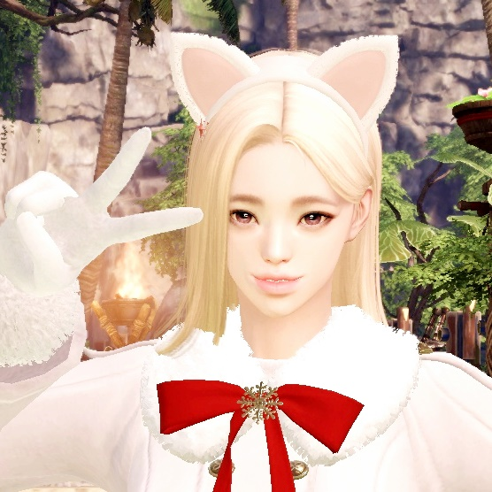

위대한 미술품🎨
위대한 미술품 #2 :: [원정대 열지] 무역 상인 - 일레인 (토벌의 인장 4275)
위대한 미술품 #23 :: [수집품] 항해 모험물 보상 (모험물 30개)
위대한 미술품 #28 :: [평판] 페르마타 - 페르마타의 진정한 매니저
위대한 미술품 #34 :: [물물교환] 아트로포스 - 검은 상인 교환 (해적주화 30000개)
위대한 미술품 #39 :: [수집품] 항해 모험물 보상 (모험물 38개)
위대한 미술품 #45 :: [큐브 황금방]
위대한 미술품 #47 :: [비밀던전]
위대한 미술품 #49 :: [모험의 서] 베른 남부 (60%)
위대한 미술품 #50 :: [평판] 아빠와 딸의 여행 - oMARMALADEo✔
위대한 미술품 #52 :: [호감도] 칸다리아 - 네리아
위대한 미술품 #53 :: [큐브] 디멘션 큐브 (하드)
위대한 미술품 #54 :: [보스러시] 태영의 회랑 (하드)
위대한 미술품 #55 :: [타워] 타워 오브 데스티니
위대한 미술품 #56 :: [모험의 서] 로웬